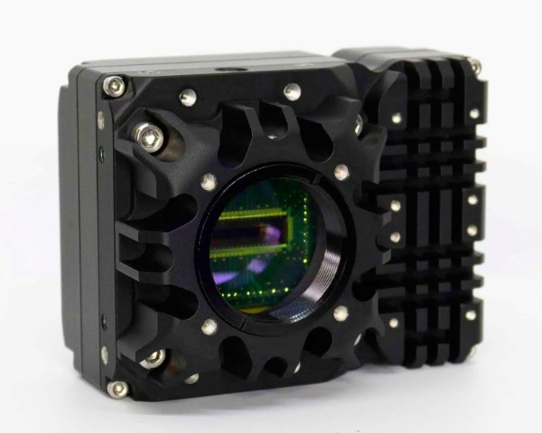

全体像
- 先端半導体(3Dパッケージ)、プラ資源循環規制、食品全数検査を背景に「SWIR(短波長赤外)検査」の需要が急増
- 製造ラインの搬送スピードを落とさずリアルタイム選別を行うため、「超高速SWIRラインスキャンカメラ」の導入が加速
- 可視光では不可能なシリコン透過、樹脂分光、含水率検出を非破壊・インラインで実現
なぜ重要か
- 搬送スピードを維持したまま高精度な欠陥検知ができるかが、製造・選別ラインの生産性と競争力を左右する
主な波長と特性
・波長領域:900nm~1,700nm
- シリコン透過: 先端半導体の内部欠陥を検査
- 1.7µm(樹脂吸収): 廃プラスチックを高精度に材質判別・選別
- 1.5µm(水分吸収): 食品などの含水率測定・非破壊検査
1. 導入アプリケーション: 各業界における活用トピックス
事例1: 半導体3Dパッケージング・先進実装の非破壊検査(2026/02)
• なぜ重要か:
半導体の高密度化や3D積層化 (2.5D/3D) の進展に伴い、シリコン基板を透過して内部マイ クロクラックや接合面の剥離・ボイドをインラインで非破壊検知する技術が急務となっています
• 技術要点:
シリコンの透過特性(900~1700nm波長域)を活用し、自動搬送されるシリコンウェハや封止内 部の構造をブレなく高解像度に撮像・計測します。
• インパクト:
後工程での不良流出を防止するとともに、装置の搬送速度を落とさずに全数検査を可能に し、製造タクトタイム短縮と歩留まり向上に直結します。
事例2: プラ新法・資源循環規制に伴うリサイクルプラ高速光学選別 (2026/09)
• なぜ重要か:
プラスチック資源循環促進法の実装に伴い、高速コンベア上を流れる多種類の樹脂(PET、PP、PE等)を高純度に自動選別する技術の重要性が増しています。
• 技術要点:
1.7µm付近のポリマー固有の光吸収帯を利用した分光イメージングにより、見た目が同様の 透明・黒色樹脂であってもリアルタイムに素材識別を行います。
• インパクト:
再生樹脂の高純度化と選別ラインの全自動化を達成し、異物混入ロス率の低減とリサイクル 材の安定供給に大きく貢献します。
事例3: 食品・農産物ラインのインライン全数非破壊検査と異物検知 (2026/02)
• なぜ重要か:
食品・農産物(茶葉、穀物、果物等)において、品質保証の強化やフードロス削減に向け、抜き取り検査から搬送ライン上での全数非破壊検査への移行が進んでいます。
• 技術要点:
水分の吸収波長(約1.5µm)における吸収特性の違いを応用し、内部の傷み・含水量異常や、可視光では判定が難しい透明樹脂片等の異物を抽出します。
• インパクト:
製品の傷みや異物混入によるクレームリスクを未然に防ぎ、搬送ラインを止めることなく高水 準な品質管理を自動化します。
さらに知る

- • 超高速110kHz フル解像度と高感度 InGaAs センサ:
自社開発「NSC2301T-SI」 センサを搭載。2048×1ピクセルの高解像度で110kHz以上の高速駆動を実現し、ウェハ検査やOCT(光干渉断層計)などの高度なインライン処理に最適です。
- • 波長0.9~1.7µm の広帯域対応:
ピーク時80%以上の高い量子効率 (QE)を誇ります。半導体検査をはじめ、ソーラーパネル、熱ガラス、食品・廃棄物選別など多彩な用途に対応します。
- • オンボード処理と柔軟な統合:
カメラ本体内で欠陥画素補正 (BPR) や不均一性補正 (NUC) をリアルタイムに実行します。CameraLink Base / GenlCam 準拠のスマート制御に対応しています。
| 項目 |
仕様・詳細 |
| センサー/ピクセル |
NSC2301T-SI (InGaAs) / 2048 × 1 pixels (8μm × 14µm) |
| 最大フレームレート |
> 110 kHz (フル解像度時)/最短露光時間: 1 με |
| 感度波長帯 (SWIR) |
0.9µm～1.7µm (Peak QE > 80%) |
| リードアウトノイズ |
< 90e- (High Gain), < 370e- (Medium Gain), < 2200e- (Low Gain) |
| インターフェース |
CameraLink Base / GenCP (GenICam)準 拠 |
| 外形寸法/重量 |
35.4×75×68 mm/280g(動作温度: -40℃～+71℃) |